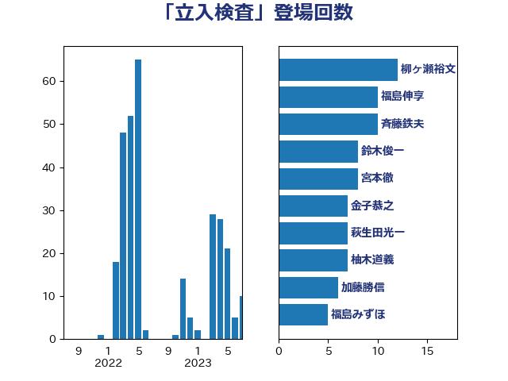

単語「立入検査」

| 柳ヶ瀬裕文 | 日本維新の会 | 12 回 |
| 福島伸享 | 無所属 | 10 回 |
| 斉藤鉄夫 | 公明党 | 10 回 |
| 鈴木俊一 | 自由民主党 | 8 回 |
| 宮本徹 | 日本共産党 | 8 回 |
| 金子恭之 | 自由民主党 | 7 回 |
| 萩生田光一 | 自由民主党 | 7 回 |
| 柚木道義 | 立憲民主党 | 7 回 |
| 加藤勝信 | 自由民主党 | 6 回 |
| 福島みずほ | 社会民主党 | 5 回 |
| 川田龍平 | 立憲民主党 | 5 回 |
| 西村康稔 | 自由民主党 | 4 回 |
| 笠井亮 | 日本共産党 | 4 回 |
| 東徹 | 日本維新の会 | 4 回 |
| 西村智奈美 | 立憲民主党 | 3 回 |
| 杉尾秀哉 | 立憲民主党 | 3 回 |
| 本田顕子 | 自由民主党 | 3 回 |
| 山田太郎 | 自由民主党 | 3 回 |
| 塩村あやか | 立憲民主党 | 3 回 |
| 伊藤岳 | 日本共産党 | 3 回 |
| 西村明宏 | 自由民主党 | 2 回 |
| 田村智子 | 日本共産党 | 2 回 |
| 梅谷守 | 立憲民主党 | 2 回 |
| 柴田巧 | 日本維新の会 | 2 回 |
| 山崎誠 | 立憲民主党 | 2 回 |
| 奥下剛光 | 日本維新の会 | 2 回 |
| 太栄志 | 立憲民主党 | 2 回 |
| 加藤鮎子 | 自由民主党 | 2 回 |
| ながえ孝子 | 無所属 | 2 回 |
| たがや亮 | れいわ新選組 | 2 回 |
| 高橋千鶴子 | 日本共産党 | 1 回 |
| 高市早苗 | 自由民主党 | 1 回 |
| 阿部司 | 日本維新の会 | 1 回 |
| 門山宏哲 | 自由民主党 | 1 回 |
| 長峯誠 | 自由民主党 | 1 回 |
| 野村哲郎 | 自由民主党 | 1 回 |
| 野中厚 | 自由民主党 | 1 回 |
| 重徳和彦 | 立憲民主党 | 1 回 |
| 谷公一 | 自由民主党 | 1 回 |
| 角田秀穂 | 公明党 | 1 回 |
| 藤丸敏 | 自由民主党 | 1 回 |
| 落合貴之 | 立憲民主党 | 1 回 |
| 若宮健嗣 | 自由民主党 | 1 回 |
| 細田健一 | 自由民主党 | 1 回 |
| 竹内真二 | 公明党 | 1 回 |
| 神津たけし | 立憲民主党 | 1 回 |
| 石垣のりこ | 立憲民主党 | 1 回 |
| 石井正弘 | 自由民主党 | 1 回 |
| 湯原俊二 | 立憲民主党 | 1 回 |
| 浜田聡 | NHK党 | 1 回 |
| 河野太郎 | 自由民主党 | 1 回 |
| 河西宏一 | 公明党 | 1 回 |
| 松本剛明 | 自由民主党 | 1 回 |
| 本庄知史 | 立憲民主党 | 1 回 |
| 新垣邦男 | 立憲民主党 | 1 回 |
| 打越さく良 | 立憲民主党 | 1 回 |
| 徳永エリ | 立憲民主党 | 1 回 |
| 後藤茂之 | 自由民主党 | 1 回 |
| 岸田文雄 | 自由民主党 | 1 回 |
| 岩谷良平 | 日本維新の会 | 1 回 |
| 岩渕友 | 日本共産党 | 1 回 |
| 山本啓介 | 自由民主党 | 1 回 |
| 山口壯 | 自由民主党 | 1 回 |
| 小沼巧 | 立憲民主党 | 1 回 |
| 宮崎雅夫 | 自由民主党 | 1 回 |
| 太田房江 | 自由民主党 | 1 回 |
| 大西健介 | 立憲民主党 | 1 回 |
| 古賀千景 | 立憲民主党 | 1 回 |
| 上田清司 | 国民民主党 | 1 回 |
| おおつき紅葉 | 立憲民主党 | 1 回 |